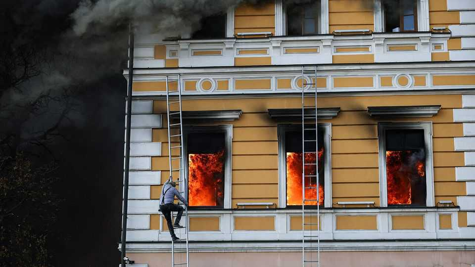
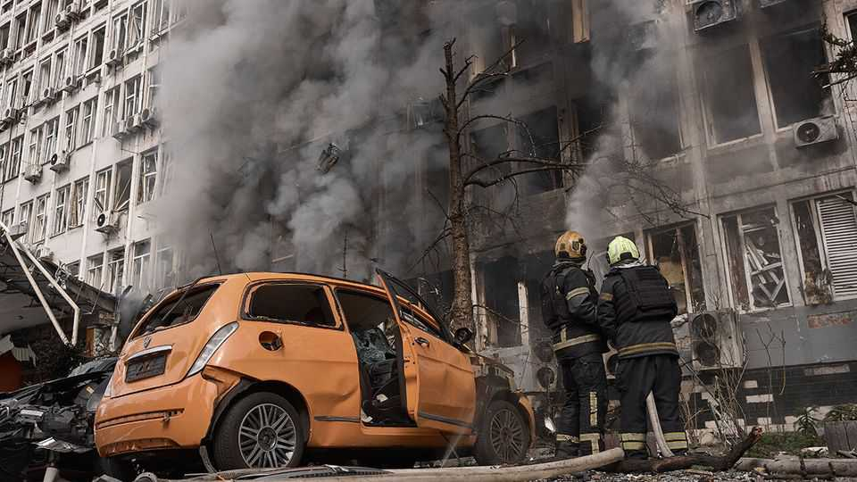

Putin’s new bombardment of Kyiv has a terrible logic
A Russian terror campaign aims to cripple the capital even before winter hits

Oct 1st 2026
IN THE Russian revolution in 1917 Vladimir Lenin went for high-level strategic targets: the telephone exchange, telegraph, railway stations and bridges. More than four and a half years into his full invasion of Ukraine, Vladimir Putin is setting his sights lower. Over the past week his drones have hit supermarkets, data centres and playgrounds. On Monday they struck a hospital and Ukraine’s National Academy of Sciences in central Kyiv, killing at least two. Survivors dangled from the burning academy building’s windows as rescuers worked below.
The escalation of terror against civilians has not come as a surprise to Ukrainian intelligence services. They warn that worse is to come. Days before the latest wave of attacks, two senior Ukrainian officials told The Economist their intelligence indicated Russia was launching a three-pronged campaign of bombing, sabotage and political chaos against the capital. One specifically identified data centres and supermarkets as the immediate targets. “Putin has gone even crazier,” that official said in mid-September. “He ordered attacks on everything civilian. They want people to be afraid of going to the supermarket.” Both officials expected the Russian campaign to intensify well before winter, with efforts to destabilise Kyiv peaking by November.
The Kremlin has not abandoned its standard winter playbook. In parallel, it has already begun targeting key nodes of electricity, water and sewerage, in particular pumping systems. Russia’s most destructive threat remains its hard-to-intercept ballistic missiles, made more dangerous by the dwindling of Ukraine’s supply of American-made Patriot interceptors. But the biggest recent shift is the mass introduction of a new generation of cheap, pilot-guided jet-powered drones, which are able to hunt their targets in real time. These are doing most of the damage right now. Ukraine is still months away from producing effective interceptors in the needed numbers. A security official says Russia has “thousands” of drones stockpiled, and is also building up supplies of ballistic missiles, with plans “to use the entire stock in the next two months”.
Officials think the escalation of bombing will be accompanied by new hybrid attacks inside Ukraine. Those may include more assassinations and conventional terror attacks. Ukraine’s counter-intelligence services say they are foiling seven or eight Russian plots a week. Most are arms-length operations, with agents recruited inside Ukraine via messenger apps like Telegram. But others involve operatives sent from Russia, which sometimes holds their family members as leverage. The Ukrainians eliminated many Russian agents in the first weeks of the full-scale invasion, but officials believe some sleeper cells remain. “Some of the cells are still frozen, 100%,” says an intelligence source.

The third prong, disinformation and efforts to sow political chaos, is harder to gauge. Many Ukrainians have well-tuned filters against Russian propaganda. Yet after years of war, ideological mobilisation is sometimes giving way to fatigue and depression. Corruption scandals, disorganisation and nepotism at the heart of Ukraine’s government give Russian bot farms plenty to work with. A breakdown in daily life could induce Ukrainians to turn on each other, warns one senior official. But others are sceptical Russia can break through. “The Russians make plans like this every year,” says Andriy Kovalenko, who heads the National Security Council’s counter-disinformation operation. “They hope in vain that their bot farms will make our people protest and demand surrender. It’s nonsense. Someone is feeding this idea to Putin so they can steal more money.”
Mr Kovalenko says there is a fundamental problem with Russia’s autumn plan: Kyiv is harder to turn off than the Kremlin thinks. Burning data centres provide striking visuals, and Russian pro-war channels are celebrating what they call Ukraine’s “digital detox”. But the city’s internet system, battle-tested before the invasion, is too decentralised for a handful of strikes to shut it down easily. The same is probably true of power, says Olga Babiy, an energy expert. Years of war have eroded much of Ukraine’s reserve capacity, but they have also given its repair crews formidable experience. “We need to look at our infrastructure not in terms of whether or not it can be destroyed, but whether it can be restored and how quickly,” says Ms Babiy.
For now, life in the capital carries on. Concerts continue while drones are shot down. Massive explosions prompt café-goers to glance at the sky, before returning to their lattes. But there are signs that Kyiv is emptying quicker than normal at this stage of the year. Country houses around the capital and near Ukraine’s western cities are practically impossible to rent for the winter; the wealthy have reserved them as bolt-holes, should life in the capital prove unbearable. Most parents with means are measuring up a westward evacuation. Early in the war refugees swelled Kyiv’s population from 3.5m to 3.7m or more, but that has since fallen to about 3.3m. In private, officials say that this winter they expect parts of the city will depopulate.
History offers some reassurance: bombing alone has rarely induced a country to capitulate. Ukraine has repeatedly proved more resilient than its enemies expected. On the front lines, Ukrainian troops are reporting considerable tactical successes, such as a drone-fronted counter-offensive near the town of Lyman that has reversed a year’s worth of Russian gains. That is probably part of the reason for Mr Putin’s ferocious assault on civilians. But as Lenin understood, Ukrainians would be wise to pay closest attention to the situation in the capital. “We’ve shown repeatedly that things usually don’t go according to the worst-case scenario,” reasons the security source. “But that it will be very hard is beyond dispute.”■